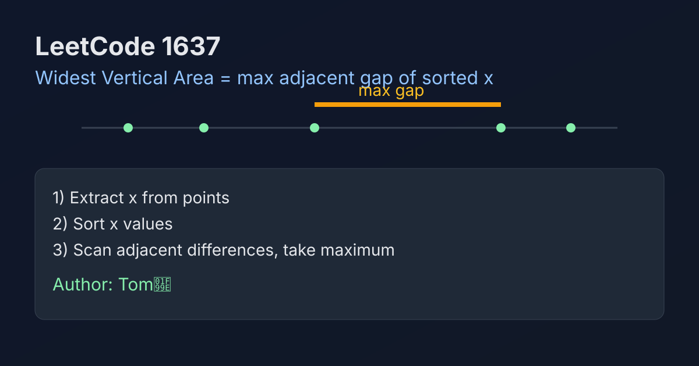

LeetCode 1637: Widest Vertical Area Between Two Points Containing No Points (Sort X + Max Adjacent Gap)
LeetCode 1637SortingGeometryToday we solve LeetCode 1637 - Widest Vertical Area Between Two Points Containing No Points.
Source: https://leetcode.com/problems/widest-vertical-area-between-two-points-containing-no-points/

English
Problem Summary
Given points on a 2D plane, find the maximum width of a vertical area where no points lie inside. A vertical area is between two x-values, and points on the boundary are allowed.
Key Insight
The y-coordinate never affects width. We only care about x-coordinates. After sorting x values, the widest empty vertical area is the largest gap between adjacent sorted x values.
Brute Force and Limitations
Trying all pairs of x values and checking if anything lies between them is unnecessary and expensive. Sorting once and scanning adjacent differences is enough.
Optimal Algorithm Steps
1) Extract all x values from points.
2) Sort x in ascending order.
3) Scan adjacent pairs and compute x[i] - x[i-1].
4) Return the maximum gap.
Complexity Analysis
Let n be the number of points.
Time: O(n log n) due to sorting.
Space: O(n) for storing x values (or O(1) extra if sorting in place in some languages).
Common Pitfalls
- Overusing y values even though they are irrelevant.
- Forgetting boundaries are allowed, so we only need adjacent sorted x gaps.
- Missing duplicate x values, where gap becomes zero.
Reference Implementations (Java / Go / C++ / Python / JavaScript)
import java.util.Arrays;
class Solution {
public int maxWidthOfVerticalArea(int[][] points) {
int n = points.length;
int[] xs = new int[n];
for (int i = 0; i < n; i++) {
xs[i] = points[i][0];
}
Arrays.sort(xs);
int ans = 0;
for (int i = 1; i < n; i++) {
ans = Math.max(ans, xs[i] - xs[i - 1]);
}
return ans;
}
}import "sort"
func maxWidthOfVerticalArea(points [][]int) int {
n := len(points)
xs := make([]int, n)
for i := 0; i < n; i++ {
xs[i] = points[i][0]
}
sort.Ints(xs)
ans := 0
for i := 1; i < n; i++ {
gap := xs[i] - xs[i-1]
if gap > ans {
ans = gap
}
}
return ans
}class Solution {
public:
int maxWidthOfVerticalArea(vector<vector<int>>& points) {
vector<int> xs;
xs.reserve(points.size());
for (auto& p : points) {
xs.push_back(p[0]);
}
sort(xs.begin(), xs.end());
int ans = 0;
for (int i = 1; i < (int)xs.size(); i++) {
ans = max(ans, xs[i] - xs[i - 1]);
}
return ans;
}
};class Solution:
def maxWidthOfVerticalArea(self, points: list[list[int]]) -> int:
xs = sorted(p[0] for p in points)
ans = 0
for i in range(1, len(xs)):
ans = max(ans, xs[i] - xs[i - 1])
return ans/**
* @param {number[][]} points
* @return {number}
*/
var maxWidthOfVerticalArea = function(points) {
const xs = points.map(p => p[0]).sort((a, b) => a - b);
let ans = 0;
for (let i = 1; i < xs.length; i++) {
ans = Math.max(ans, xs[i] - xs[i - 1]);
}
return ans;
};中文
题目概述
给定二维平面上的若干点，求一个不包含任何点内部的“竖直区域”最大宽度。区域边界上的点允许存在。
核心思路
宽度只由 x 坐标决定，y 坐标与结果无关。将所有 x 排序后，答案就是相邻 x 的最大差值。
暴力解法与不足
若枚举所有左右边界并检查中间是否有点，复杂且低效。排序后只看相邻差值即可覆盖最优解。
最优算法步骤
1）提取所有点的 x 坐标。
2）对 x 数组升序排序。
3）遍历相邻元素，计算差值。
4）返回最大差值。
复杂度分析
设点的数量为 n。
时间复杂度：O(n log n)（排序主导）。
空间复杂度：O(n)（保存 x 坐标；部分语言可原地降到常数额外空间）。
常见陷阱
- 错把 y 坐标纳入判断。
- 没意识到只需看相邻有序 x 的间距。
- 忽略重复 x（间距为 0）这种情况。
多语言参考实现（Java / Go / C++ / Python / JavaScript）
import java.util.Arrays;
class Solution {
public int maxWidthOfVerticalArea(int[][] points) {
int n = points.length;
int[] xs = new int[n];
for (int i = 0; i < n; i++) {
xs[i] = points[i][0];
}
Arrays.sort(xs);
int ans = 0;
for (int i = 1; i < n; i++) {
ans = Math.max(ans, xs[i] - xs[i - 1]);
}
return ans;
}
}import "sort"
func maxWidthOfVerticalArea(points [][]int) int {
n := len(points)
xs := make([]int, n)
for i := 0; i < n; i++ {
xs[i] = points[i][0]
}
sort.Ints(xs)
ans := 0
for i := 1; i < n; i++ {
gap := xs[i] - xs[i-1]
if gap > ans {
ans = gap
}
}
return ans
}class Solution {
public:
int maxWidthOfVerticalArea(vector<vector<int>>& points) {
vector<int> xs;
xs.reserve(points.size());
for (auto& p : points) {
xs.push_back(p[0]);
}
sort(xs.begin(), xs.end());
int ans = 0;
for (int i = 1; i < (int)xs.size(); i++) {
ans = max(ans, xs[i] - xs[i - 1]);
}
return ans;
}
};class Solution:
def maxWidthOfVerticalArea(self, points: list[list[int]]) -> int:
xs = sorted(p[0] for p in points)
ans = 0
for i in range(1, len(xs)):
ans = max(ans, xs[i] - xs[i - 1])
return ans/**
* @param {number[][]} points
* @return {number}
*/
var maxWidthOfVerticalArea = function(points) {
const xs = points.map(p => p[0]).sort((a, b) => a - b);
let ans = 0;
for (let i = 1; i < xs.length; i++) {
ans = Math.max(ans, xs[i] - xs[i - 1]);
}
return ans;
};
Comments